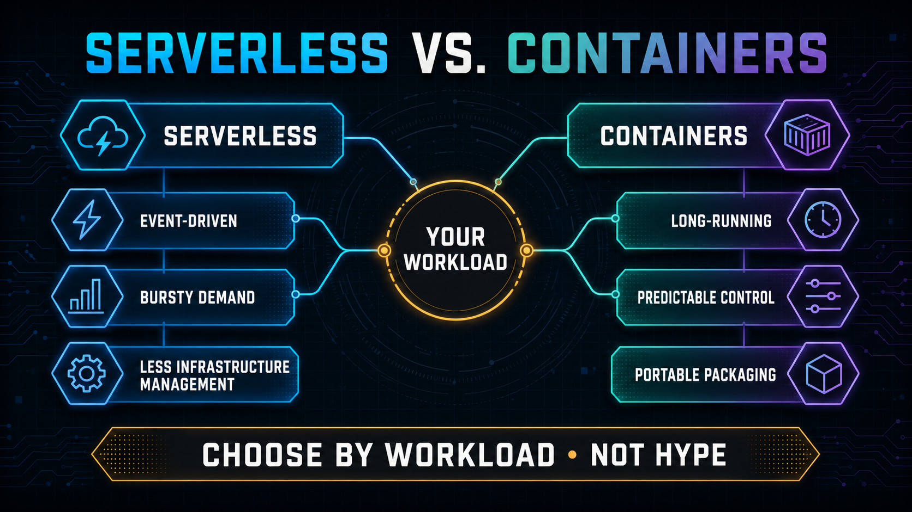
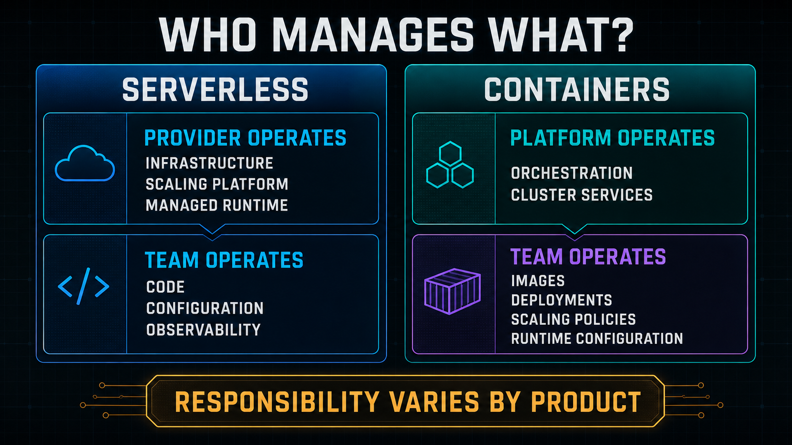
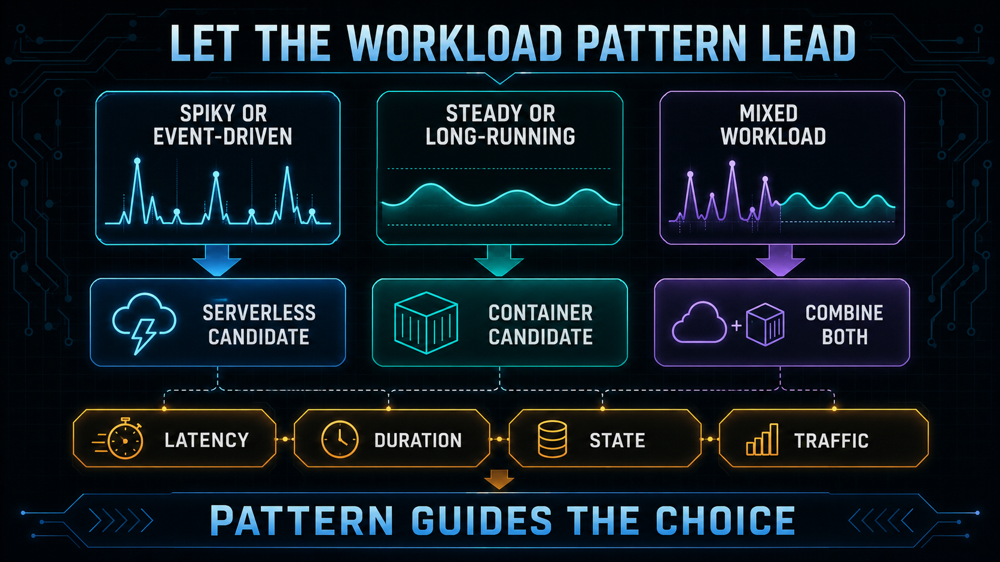
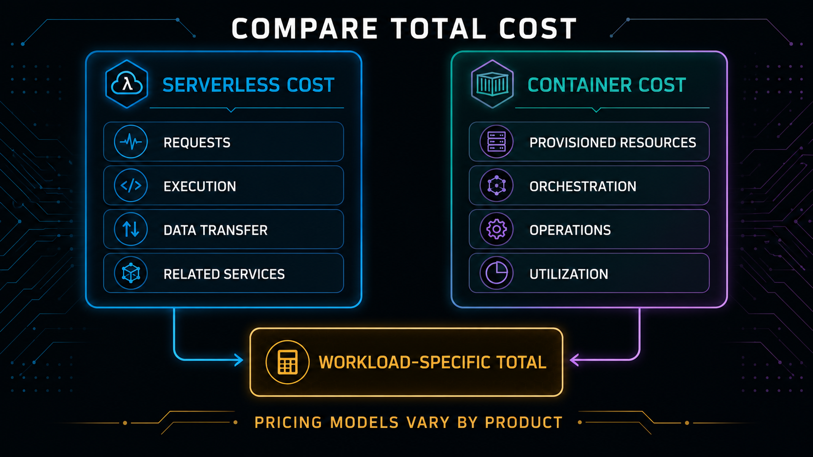

Serverless vs Containers in 2026: Choosing the Right Architecture for Your Next Project
By Massoda
This comparison gets asked constantly, and most answers to it are feature checklists that don't actually help you decide. Here's a more practical framework based on the actual shape of your workload.
Use the framework below to match your architecture choice to real-world traffic, cost, and operational constraints.

Choose Serverless When:
Traffic is spiky or unpredictable. Serverless (AWS Lambda, Azure Functions, Google Cloud Functions) scales to zero and back up automatically — you pay for actual invocations, not idle capacity. This is ideal for workloads with irregular traffic patterns.
You want to minimize operational overhead. No servers to patch, no cluster to manage, no capacity planning. For small teams or side projects, this is a genuine time-saver, not just a marketing line.
Individual tasks are short-lived. API endpoints, event-driven processing, scheduled jobs — serverless fits naturally where execution time is measured in seconds, not hours.

Choose Containers When:
You need consistent, predictable performance at sustained load. Serverless cold-starts and per-invocation overhead can introduce latency variance that containerized services (running continuously) avoid.
Your workload runs long or needs persistent state/connections. Long-running processes, WebSocket connections, or anything that benefits from warm in-memory state fits containers better — serverless functions are designed to be short-lived and stateless.
You need portability across cloud providers or on-prem. A well-built container runs anywhere a container runtime exists. Serverless functions are more tightly coupled to their specific cloud provider's execution model, making migration harder later.
You're operating at genuinely high, sustained scale. At high enough consistent traffic, the per-invocation pricing model of serverless can actually cost more than provisioned container capacity running at high utilization.

The Honest Middle Ground
Most real production systems in 2026 use both — serverless for event-driven glue code, webhooks, and spiky endpoints; containers (often orchestrated with Kubernetes or a managed equivalent like ECS or Cloud Run) for the core application services that need predictable performance. Treating this as an exclusive either/or choice is usually the wrong framing for anything beyond a small side project.

The Practical Starting Point
If you're building something new and genuinely don't know your traffic pattern yet, start serverless — the operational simplicity buys you time to learn your actual usage pattern before committing to infrastructure that needs active management. You can always containerize the pieces that outgrow it later; that migration is far easier than the reverse.